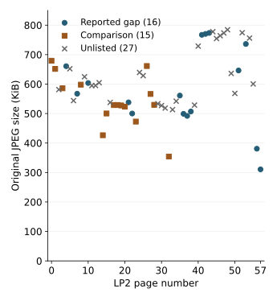

Line gaps: spacing, punctuation and file sizes
Correct a reported size comparison, reproduce original-file measurements, and distinguish byte counts from line-gap geometry.
On this page
“Big gaps” refers to unusually large vertical spaces between lines of runes. A reported association with punctuation and numbers suggests a useful layout study, but three questions need separate evidence: where the gaps occur, how they are measured, and whether the corresponding files differ in size.
A corrected file-size comparison
A supplied analysis lists 16 large-gap pages and 15 comparison pages. Its reported mean for the comparison group is 508.9375, but that divides the listed total by 16 rather than 15. Recomputing the displayed figures changes the difference substantially:
| Reported group | Pages | Sum of listed sizes | Correct mean |
|---|---|---|---|
| Large gap | 16 | 9,325 | 582.8125 |
| Comparison | 15 | 8,143 | 542.8667 |
The corrected difference is approximately 39.95 in the source’s size units, rather than approximately 74. The source labels rounded values “kb”; this audit does not assume that label defines bytes, decimal kilobytes or binary kibibytes. The arithmetic correction alone does not tell us whether gap width causes a size difference.
What the archived files show
Measuring the original JPEG files directly gives a mean of 596,097.375 bytes for the 16 reported gap pages and 555,311.667 bytes for the 15 listed comparison pages. The difference is about 40,785.708 bytes, or 39.83 KiB. Here 1 KiB means exactly 1,024 bytes. These are descriptive results for the two supplied lists; their labels have not been independently validated by measuring line gaps.

File size is a property of the encoded file, not a direct measurement of line spacing. A comparison of different pages also changes the drawing, text, background and potentially encoding choices. This audit therefore does not establish a causal explanation or a statistically significant association. The original comparison is described as random, but no sampling procedure or seed is provided.
Exact page lists
Reported large-gap pages: LP2-04, 07, 10, 21, 22, 35, 36, 37, 38, 41, 42, 43, 51, 53, 56 and 57.
Listed comparison pages: LP2-00, 01, 08, 15, 17, 18, 19, 20, 14, 23, 26, 27, 28, 32 and 03. The order here preserves the supplied list. Neither group includes all remaining pages.
What would establish a gap measurement?
The source reports 109 pixels for a large gap and 73 for a regular gap, with a separate 129-pixel large gap on LP2-57. Those numbers are reported measurements, not independently reproduced measurements here. The excerpt refers to images showing the measuring points, but those images were not supplied.
“Gap” needs a geometric definition. Baseline-to-baseline line pitch, the blank distance between the lowest ink of one line and highest ink of the next, and a distance measured between selected glyphs can differ on the same page. Punctuation extending above or below the runes makes this distinction especially important. A display screenshot also needs a known scale before its pixels can be compared with original-image pixels.
- Use the original JPEG and record its hash, dimensions and orientation. See image regions and measurements.
- Choose one definition of gap, an ink-detection or manual marking procedure, and the treatment of punctuation, headings and illustrations.
- Save the endpoint coordinates and an annotated view for every measured line pair. Keep uncertain measurements marked as uncertain.
- Measure all eligible pages before classifying gaps. Define the cutoff and page-level rule explicitly: for example, whether one qualifying pair is enough.
- Only then compare punctuation, number-bearing regions or file properties, documenting exclusions and all comparisons tested.
This would test the proposed punctuation association. The file-size audit below does not. Likewise, arithmetic properties of 73 or 109 do not validate the measurements or demonstrate an intended cipher instruction. A later overlay proposal would require its own fixed alignment, scale, overlap metric and control comparisons.
Reproduce the audit
From a repository checkout, run python scripts/audit_gap_file_sizes.py --check. Alternatively, extract both the reference-data bundle and original-images bundle into the same directory, preserving folders, and run the command there. Python 3 is sufficient; this script uses no network, image decoder or AI service.
The script stores the two source lists, calculates exact rational means, and reads all 58 LP2 JPEGs. The JSON report records byte counts and SHA-256 hashes, including the 27 pages outside the original comparison. Use --output my-gap-size-audit.json to save a fresh report without replacing an existing file. The check confirms arithmetic and file identity, not the source’s gap labels.
For related distinctions, see search space and bounds, fixed-window image comparisons, and word-length measurements and transcription conventions. This page records a descriptive source audit; a controlled gap-association experiment remains to be specified.
To regenerate the chart, install Matplotlib and run python scripts/plot_gap_file_sizes.py --output my-gap-size-chart.svg. The plotting script reads the saved report and does not recompute or classify gaps.
The related JPEG byte-distribution audit checks the proposed grayscale explanation directly against frame headers. It finds both one-component and three-component images in each modal-byte group.
Manuscript pages discussed
LP2-04 · LP2-07 · LP2-10 · LP2-21 · LP2-22 · LP2-35 · LP2-36 · LP2-37 · LP2-38 · LP2-41 · LP2-42 · LP2-43 · LP2-51 · LP2-53 · LP2-56 · LP2-57